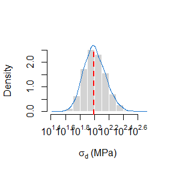
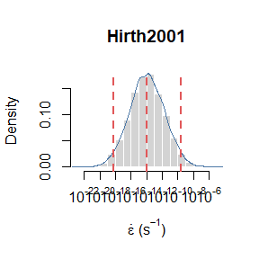
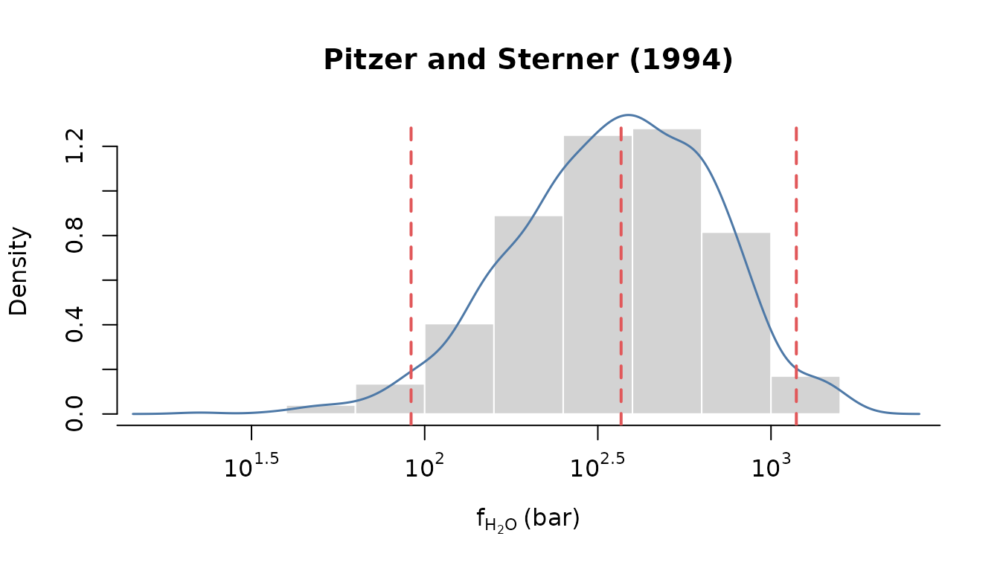
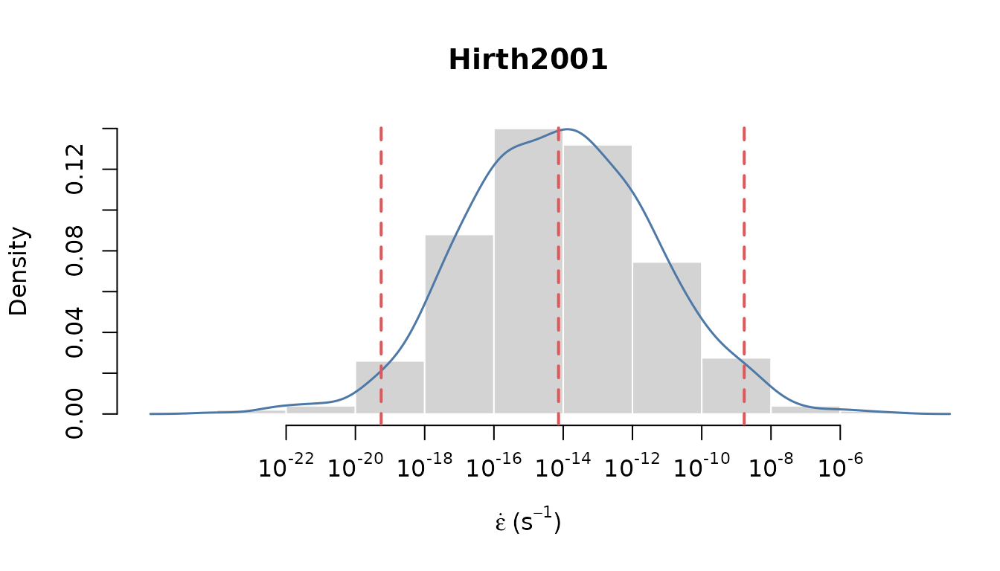
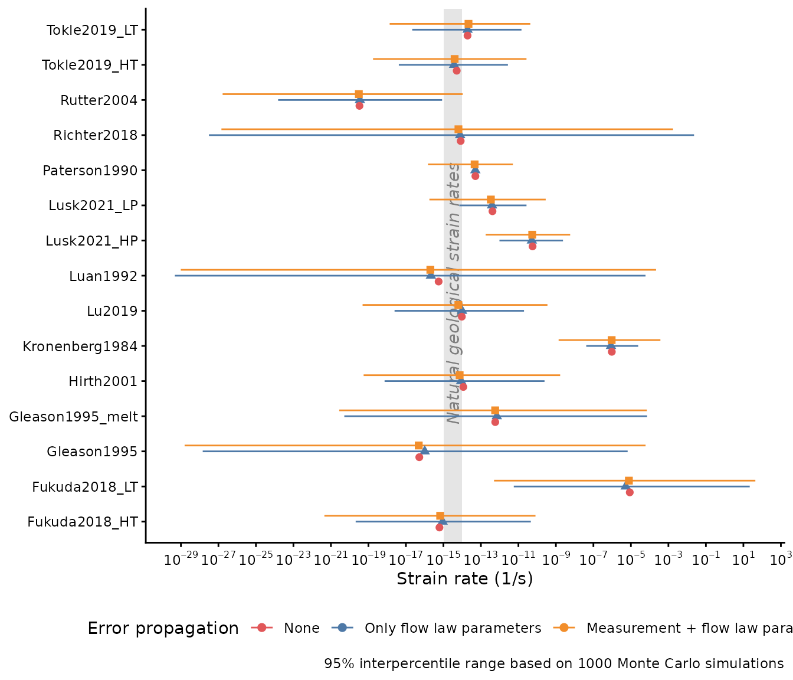

Define initial grainsize, temperature and pressure:
grainsize <- units::set_units(11, um)
stress0 <- grainsize_piezometry(grainsize, propagate_err = FALSE)
temperature <- units::set_units(300, degC)
pressure <- units::set_units(400, MPa)
fugacity <- ps_fugacity(pressure, temperature)
models <- c("Hirth2001", "Paterson1990", "Kronenberg1984", "Luan1992",
"Gleason1995", "Gleason1995_melt", "Rutter2004", "Fukuda2018_LT",
"Fukuda2018_HT", "Richter2018", "Lu2019", "Tokle2019_LT",
"Tokle2019_HT", "Lusk2021_LP", "Lusk2021_HP")No error propagation
edot_estimates0 <- sapply(
models,
function(m) {
creep_quartz(
stress = stress0,
temperature = temperature,
fugacity = fugacity,
pressure = pressure,
grainsize = grainsize,
model = m,
propagate_err = FALSE)
}
) |>
setNames(models) |>
t() |>
t() |>
as.data.frame() |>
rename(`50%` = V1)
edot_estimates0$model <- models
edot_estimates0$error <- "none"Only error propagation of flow law uncertainties
Specify the amount of Monte Carlo (MC) simulations:
n <- 1e3Recalculate stress using MC simulations:
stress1 <- grainsize_piezometry(grainsize, sim = n)Distribution of differential stress
Visualize the calculated stress estimates:
stress_log <- log10(as.numeric(stress1))
hist(stress_log, xlab = bquote(sigma[d] ~ "(MPa)"),
main = NULL, freq = FALSE, xaxt = "n", border = "white")
ticks <- seq(1.4, 2.6, .2)
labels <- sapply(ticks, function(i) as.expression(bquote(10^.(i))))
axis(1, at = ticks, labels = labels)
lines(density(stress_log), lwd = 1.5, col = "dodgerblue3", xpd = TRUE)
abline(v = median(stress_log), lty = 2, lwd = 2, col = "red")
Calculate the strain rates using the stress estimates:
edot_estimates1 <- lapply(
models,
function(m) {
creep_quartz(
stress = median(stress1),
temperature = temperature,
fugacity = fugacity,
pressure = pressure,
grainsize = grainsize,
model = m,
sim = n)
}
) |>
setNames(models)Distribution of strain rate
Visualize the strain rate estimates:
m <- "Hirth2001"
edot_log <- log10(as.numeric(edot_estimates1[[m]]))
hist(edot_log, xlab = bquote(dot(epsilon) ~ "(" * s^{
-1
} * ")"), main = m, freq = FALSE, xaxt = "n", border = "white")
ticks <- seq(-22, -6, 2)
labels <- sapply(ticks, function(i) as.expression(bquote(10^.(i))))
axis(1, at = ticks, labels = labels)
lines(density(edot_log), lwd = 1.5, col = "#4E79A7", xpd = TRUE)
abline(v = quantile(edot_log, probs = c(.025, .5, .975)), lty = 2, lwd = 2, col = "#E15759")
edot_quantiles1 <- sapply(edot_estimates1, function(x) {
qs <- quantile(x, probs = c(.025, .5, .975))
m <- exp(mean(log(x)))
c(qs, mean = m)
}) |>
t() |>
as.data.frame()
# edot_quantiles1$model <- reorder(factor(models), edot_quantiles1$`50%`)\
edot_quantiles1$model <- models
edot_quantiles1$error <- "only flow law"Error propagation of flow law uncertainties and measurement errors
Now we add some uncertainties to our temperature and pressure estimates, and then recalculate the fugacity:
(this may take a while…)
temperature2 <- units::set_units(rnorm(n, temperature, 50), degC)
pressure2 <- units::set_units(rnorm(n, pressure, 100), MPa)
fugacity2 <- ps_fugacity(pressure2, temperature2, future.seed = TRUE)Distribution of fugacity values
Visualize the distribution of the recalculated fugacity values:
fug_bar <- log10(as.numeric(fugacity2))
hist(fug_bar, xlab = bquote("f"["H"[2] * "O"] ~ "(bar)"),
main = "Pitzer and Sterner (1994)",
freq = FALSE, xaxt = "n",
border = "white")
ticks <- seq(1, 4, .5)
labels <- sapply(ticks, function(i) as.expression(bquote(10^.(i))))
axis(1, at = ticks, labels = labels)
lines(density(fug_bar), lwd = 1.5, col = "#4E79A7", xpd = TRUE)
abline(v = quantile(fug_bar, probs = c(.025, .5, .975)), lty = 2, lwd = 2, col = "#E15759")
Student’s T-test for normal distribution:
t.test(as.numeric(fugacity2))
#>
#> One Sample t-test
#>
#> data: as.numeric(fugacity2)
#> t = 49.629, df = 999, p-value < 2.2e-16
#> alternative hypothesis: true mean is not equal to 0
#> 95 percent confidence interval:
#> 414.6980 448.8424
#> sample estimates:
#> mean of x
#> 431.7702
t.test(log10(as.numeric(fugacity2)))
#>
#> One Sample t-test
#>
#> data: log10(as.numeric(fugacity2))
#> t = 282.68, df = 999, p-value < 2.2e-16
#> alternative hypothesis: true mean is not equal to 0
#> 95 percent confidence interval:
#> 2.531073 2.566459
#> sample estimates:
#> mean of x
#> 2.548766Distribution of strain rate values
Calculate strain rate values:
edot_estimates2 <- lapply(
models,
function(m) {
creep_quartz(
stress = stress1,
temperature = temperature2,
fugacity = fugacity2,
pressure = pressure2,
grainsize = grainsize,
model = m,
sim = n)
}
) |>
setNames(models)Visualize the distribution of the new strian rate values:
m <- "Hirth2001"
edot_log2 <- log10(as.numeric(edot_estimates2[[m]]))
hist(edot_log2, xlab = bquote(dot(epsilon) ~ "(" * s^{
-1
} * ")"), main = m, freq = FALSE, xaxt = "n", border = "white")
ticks <- seq(-22, -6, 2)
labels <- sapply(ticks, function(i) as.expression(bquote(10^.(i))))
axis(1, at = ticks, labels = labels)
lines(density(edot_log2), lwd = 1.5, col = "#4E79A7", xpd = TRUE)
abline(v = quantile(edot_log2, probs = c(.025, .5, .975)), lty = 2, lwd = 2, col = "#E15759")
Compare results
Finally, we compare the strain rate results calculated without any error propagation, considering the errors in the flow laws, and the uncertainties in the initial temperature and pressure values:
bind_rows(edot_quantiles1, edot_quantiles2, edot_estimates0) |>
mutate(
# model = reorder(factor(model), `50%`),
error = factor(error, levels = c("none", "only flow law", "all"))
) |>
ggplot(aes(x = `50%`, xmin = `2.5%`, xmax = `97.5%`, y = model, color = error)) +
geom_rect(aes(xmin = 1e-15, xmax = 1e-14, ymin = -Inf, ymax = Inf), color = NA, fill = "grey90") +
annotate("text",
x = 10^(-14.5),
y = length(models) / 2,
label = "Natural geological strain rates",
angle = 90, hjust = .5, vjust = .5, color = "grey50", fontface = 3) +
geom_linerange(position = position_dodge(width = 0.5, orientation = "y")) +
geom_point(aes(x = `50%`, shape = error), size = 2,
position = position_dodge(width = 0.5, orientation = "y")
) +
scale_x_log10("Strain rate (1/s)", breaks = breaks_log(n = 15), labels = label_log()) +
scale_color_manual("Error propagation",
values = c("all" = "#F28E2B", "only flow law" = "#4E79A7", "none" = "#E15759"),
labels = c("all" = "Measurement + flow law parameters", "only flow law" = "Only flow law parameters", "none" = "None")
) +
labs(y = NULL, caption = paste("95% interpercentile range based on", n, "Monte Carlo simulations")) +
guides(shape = "none") +
theme(legend.position = "bottom")